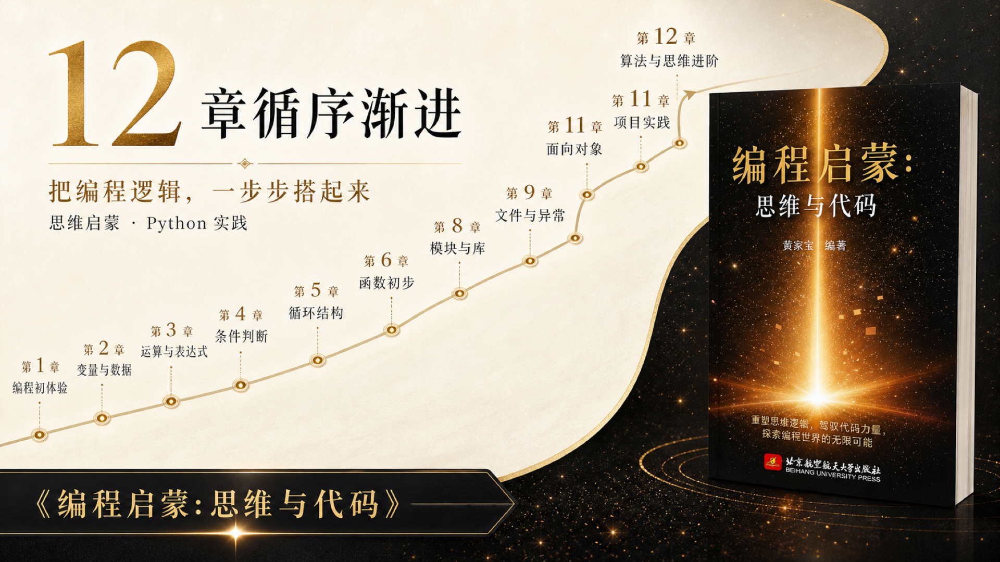
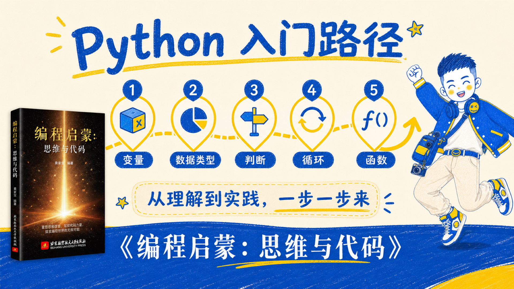
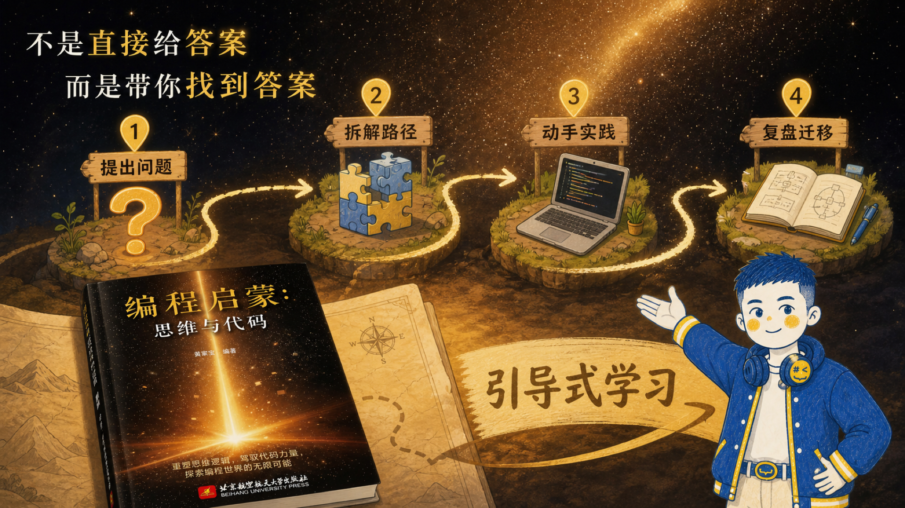
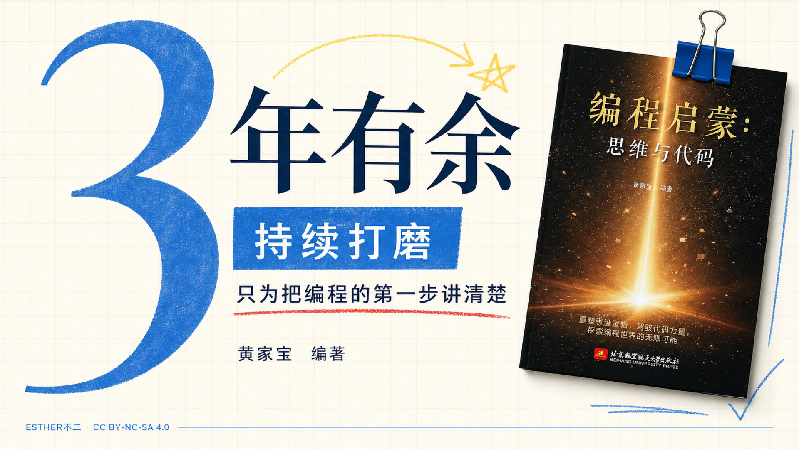
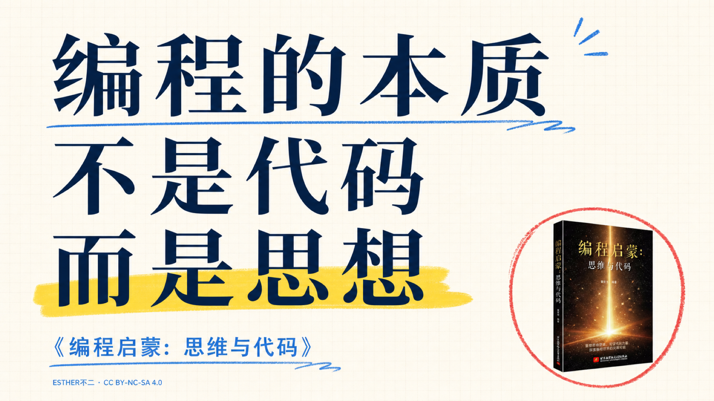
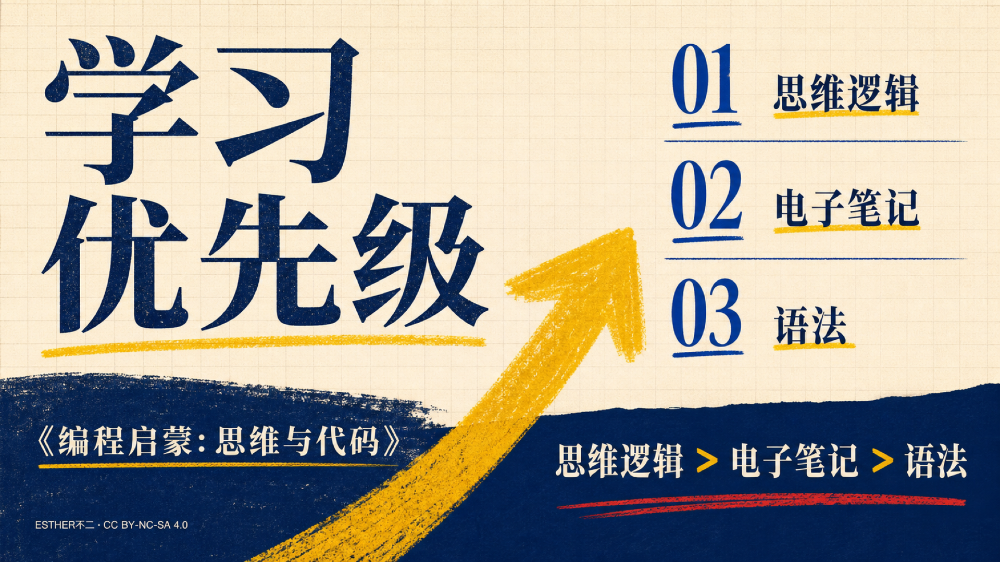
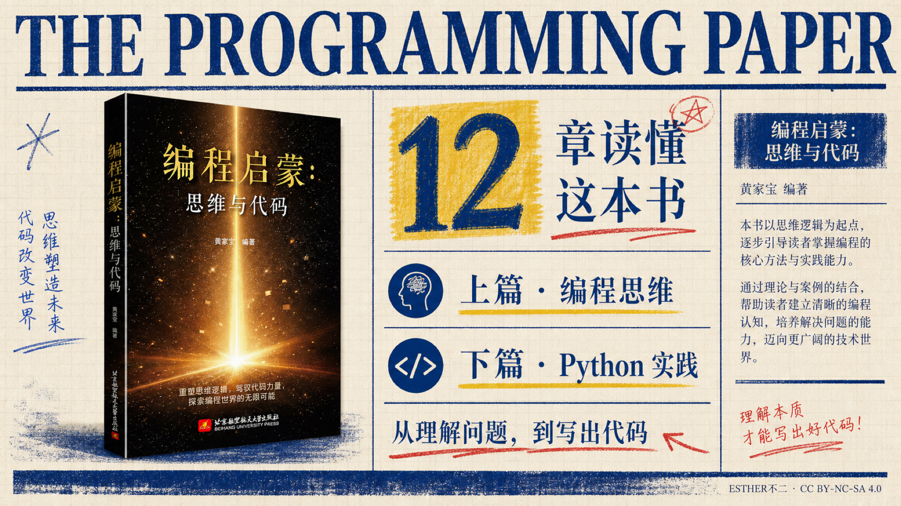

01 · 电影黑金主视觉 新书
02 · 书店编辑风 推荐
03 · 第一本编程书 入门
04 · 先思考，再写代码 方法
05 · 思维 + Python 结构

06 · 十二章循序渐进 内容
07 · 零基础起点 受众
08 · 听懂却写不出？ 痛点
09 · 不只背语法 卖点
10 · 生活里的算法 趣味
11 · 机器如何理解世界 好奇

12 · Python 学习路径 路径
13 · 三年有余打磨 信任

14 · 带你找到答案 教学
15 · AI 时代的编程逻辑 趋势
16 · 给想系统入门的学生 学生
17 · 给孩子的编程启蒙 家长
18 · 自学不迷路 自学
19 · 图书 + 在线资源 资源
20 · 拿起这本书 行动
21 · Esther 新书主视觉 Esther

22 · 超大数字 3 Esther
23 · 思维 × 代码 Esther
24 · 为什么写不出来？ Esther

25 · 本质是思想 Esther

26 · 学习优先级 Esther
27 · 三类读者 Esther

28 · 十二章报纸风 Esther
29 · 书页之外继续实践 Esther
30 · 从今天开始 Esther